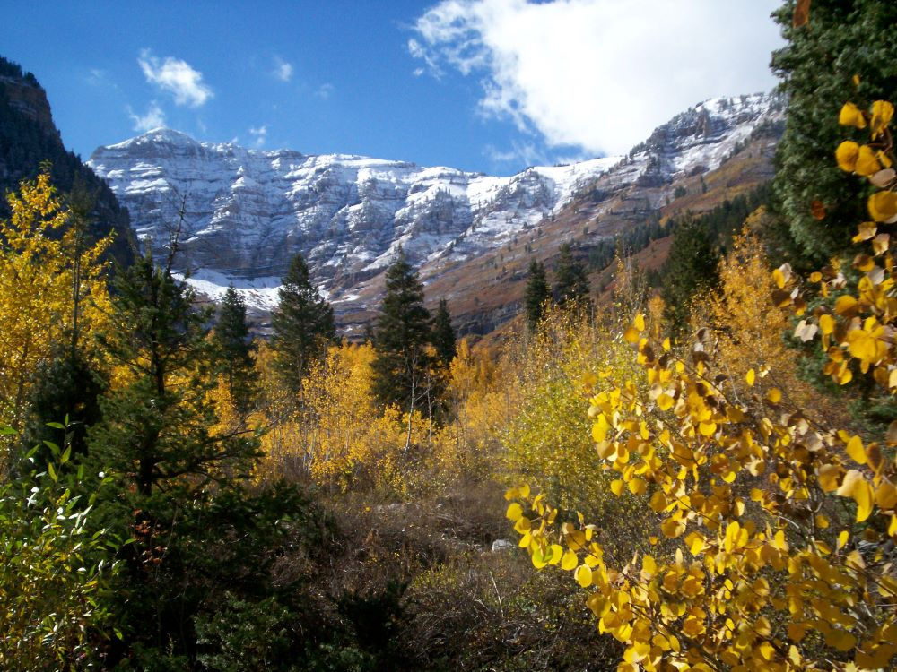
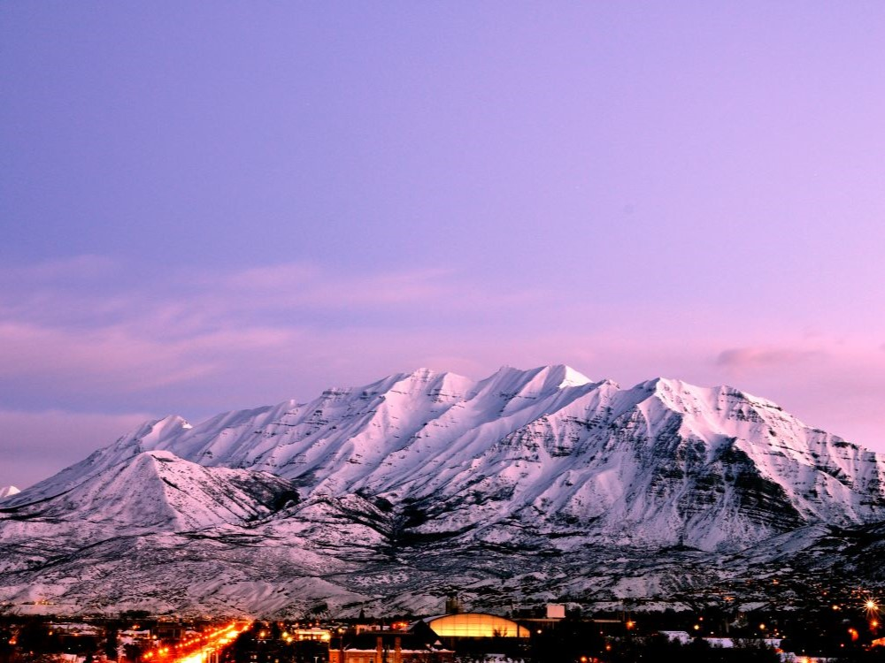

Towering alpine peak with strenuous hiking trails, glacial features, and panoramic views of valleys, lakes, and rugged wilderness.
General Information
Trail access seasonal due to snow; summer and early fall recommended
$8 parking permit required at Timpooneke Trailhead on peak days (Fri–Sun & holidays)
America the Beautiful Pass accepted
How to Get There
From Provo (20 mi): Take US-189 N through Provo Canyon, turn left onto UT-92 W (Alpine Loop Scenic Byway), and follow signs to either Aspen Grove or Timpooneke trailheads.
Overview
Mount Timpanogos is the second-highest peak in Utah’s Wasatch Range, rising to roughly 11,750 feet and towering about 7,000 feet above Utah Valley. It lies within the Uinta-Wasatch-Cache National Forest, and Congress designated the mountain a federal wilderness area in 1984 to protect its alpine terrain. The summit hike is a rite of passage for Utah hikers, passing waterfalls, wildflower meadows, mountain goats, a small glacial remnant and the blue waters of Emerald Lake before ending with sweeping views over the valley. From 1911 to 1970 the mountain hosted an annual mass hike organized from Provo, a tradition that helped make “Timp” a local icon, and legends of the Timpanogos Ute add to its mystique.
Access
Mount Timpanogos sits between Provo Canyon and American Fork Canyon, about 20 miles from Provo and a little over an hour from Salt Lake City. Two trailheads serve the summit. Aspen Grove, at the Theater in the Pines area, is reached from Provo Canyon on UT-92 past Sundance Mountain Resort, while Timpooneke starts at Timpooneke Campground off the Alpine Loop in American Fork Canyon. Both are reached by paved road, and a canyon fee is collected at the canyon entrances (see the fees above). Parking at Timpooneke requires a reservation on summer weekend and holiday mornings, and lots at both trailheads fill early on busy days, so start at dawn. Cell service is unreliable on the trail.
Seasons
Summer is prime season, and most hikers climb between about May and October, with July and August best for wildflower meadows, which often peak in early August. Snowfields can linger on the upper mountain into July, and thunderstorms regularly build in the afternoon, so early starts are important. Fall brings golden aspen and maple color on the lower slopes and cooler, quieter hiking. The Alpine Loop road is typically closed by snow in winter, which limits access to the Timpooneke side, and winter and spring conditions include heavy snow and avalanche danger that require mountaineering skills. The mountain can be climbed year-round, but conditions are serious outside summer and early fall.
Things to Do
Summit Hike
The classic outing is the long day hike to the 11,750-foot summit, which most hikers complete in a single day. A small shelter near the top offers a place to rest before the descent, and the views stretch across Utah Valley, Utah Lake and the Wasatch Range.
Emerald Lake and Wildflower Meadows
Emerald Lake, a small glacial lake at about 10,380 feet, is a popular destination in its own right. Waterfalls and meadows of summer wildflowers along the lower trails make for rewarding shorter hikes without going to the summit.
Wildlife Watching
Mountain goats are often seen along the upper route, and moose and other wildlife live in the canyons below. Keep your distance and keep dogs, which are allowed, under control.
Backpacking and Scenic Driving
Some hikers turn the climb into an overnight backpacking trip. Below the peak, the Alpine Loop Scenic Byway (UT-92) offers fall color drives and access to picnic areas and trailheads when it is open.
Top Trails
Aspen Grove Trail to the Summit
Length: About 15.7 miles round trip
Elevation Gain: About 5,375 feet
Difficulty: Very strenuous
The most popular route starts at Theater in the Pines and climbs past waterfalls and meadows to Emerald Lake before the final push to the summit ridge. It is steeper than the Timpooneke route, and horses are permitted on this trail.
Timpooneke Trail to the Summit
Length: About 15.0 miles round trip
Elevation Gain: About 4,425 feet
Difficulty: Very strenuous
Starting at Timpooneke Campground in American Fork Canyon, this route is somewhat less steep than Aspen Grove but still long. It climbs through open basins and wildflower meadows to a steep switchbacking section near the summit, and it is a good choice for summer wildflowers.
Visitor Centers
There is no visitor center on Mount Timpanogos itself, and there are no services at the trailheads beyond restrooms. The nearby Timpanogos Cave National Monument in American Fork Canyon has a visitor center with information on the area, and the Uinta-Wasatch-Cache National Forest provides trail and road conditions online. Information on trailheads, fees and closures is also available through Visit Utah and the Forest Service website.
Camping and Lodging
Developed campgrounds sit at both trailheads, Timpooneke Campground and the Theater in the Pines area near Aspen Grove, and more campgrounds are scattered along the Alpine Loop. Overnight camping inside the wilderness is allowed under wilderness rules, so check current regulations before backpacking. Lodging is available at the nearby Sundance Mountain Resort, and hotels and motels can be found in Provo, Orem, American Fork and Pleasant Grove within about 30 minutes. Salt Lake City, roughly an hour away, offers the widest selection.
This article uses material from the Wikipedia articles and official tourism pages for Mount Timpanogos, which are released under the Creative Commons Attribution-Share-Alike License 3.0. Additional information from Visit Utah.


